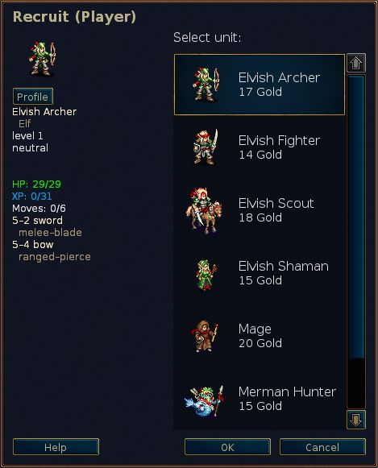

Table of Contents
List of Tables
- 2.1. General controls and hotkeys
- 2.2. Unit and turn specific hotkeys
- 2.3. Whiteboard specific hotkeys
- 2.4. Multiplayer specific hotkeys
- 2.5. Miscellaneous hotkeys
- 2.6. Miscellaneous hotkeys
- 2.7. Pandora specific controls and hotkeys
- 2.8. Time of the day and damage
- 2.9. Experience bonuses for killing or fighting enemies of different levels
- 2.10. Orbs
The Battle for Wesnoth is a turn-based strategy game with a fantasy theme.
Build a great army, gradually training raw recruits into hardened veterans. In later games, recall your toughest warriors and form a deadly host against whom none can stand! Choose units from a large pool of specialists, and hand-pick a force with the right strengths to fight well on different terrains against all manner of opposition.
Wesnoth has many different sagas waiting to be played. You can battle orcs, undead, and bandits on the marches of the Kingdom of Wesnoth; fight alongside dragons in the lofty peaks, elves in the green reaches of the Aethenwood, dwarves in the great halls of Knalga, or even merfolk in the Bay of Pearls. You can fight to regain the throne of Wesnoth, or use your dread power over the Undead to dominate the land of mortals, or lead your glorious Orcish tribe to victory against the humans who dared despoil your lands.
You will be able to select from among over two hundred unit types (infantry, cavalry, archers, and mages are just the beginning) and fight actions ranging from small-unit ambushes to clashes of vast armies. You can also challenge your friends – or strangers – and fight in epic multi-player fantasy battles.
Battle for Wesnoth is open-source software, and a thriving community of volunteers co-operates to improve the game. You can create your own custom units, write your own scenarios, and even script full-blown campaigns. User-maintained content is available from an add-on server, and the very best of it is incorporated into Battle for Wesnoth’s official releases.
The known portion of the Great Continent, on which Wesnoth abides, is generally divided into three areas: the Northlands, which are generally lawless; the kingdom of Wesnoth and its occasional principality, Elensefar; and the domain of the South-West Elves in the Aethenwood and beyond.
The Kingdom of Wesnoth lies in the centre of this land. Its borders are the Great River to the north, the Dulatus Hills in the east and south, the edge of the Aethenwood to the south-west, and the Ocean to the west. Elensefar, a once-province of Wesnoth, is bordered by the Great River to the north, a loosely defined line with Wesnoth to the east, the Bay of Pearls to the south, and the ocean to the west.
The Northlands is the wild country north of the Great River. Various groups of orcs, dwarves, barbarians and elves populate the region. To the north and east lies the forest of Lintanir, where the great kingdom of the North-Elves keeps to its own mysterious affairs.
Over the land are scattered villages where you can heal your troops and gather the income required to support your army. You will also have to cross mountains and rivers, push through forests, hills and tundra, and cross open grassland. In each of these areas different creatures have adapted to live there and can travel more easily and fight better when they are in familiar terrain.
In the world of Wesnoth there dwell humans, elves, dwarves, orcs, drakes, saurians, mermen, nagas, and many other races yet more obscure and wondrous. In accursed lands walk undead and ghosts and spectres; monsters lurk in its ruins and dungeons. Each has adapted to particular terrains. Humans inhabit primarily the temperate grasslands. In the hills, mountains and underground caves orcs and dwarves are most at home. In the forests the elves reign supreme. In the oceans and rivers mermen and nagas dominate.
For game purposes, the races group into factions; for example, orcs often co-operate with trolls, and elves or dwarves with humans. Some other factions reflect divisions within human society — loyalists vs. outlaws, for example. In most campaigns, you will control units drawn from a single faction. But sometimes factions make alliances with others, so you may face more than one faction in a scenario.
When Wesnoth first starts it displays an initial background and a column of buttons called the Main Menu. The buttons only work with a mouse. For the impatient, we recommend you: click the "Language" button to set your language; then click the "Tutorial" button to run the tutorial; and then play the campaign, "A Tale of Two Brothers" by clicking the "Campaign" button and selecting it from the list provided.

- Tutorial
- The tutorial is a real, but basic, game which teaches you some of the basic controls needed to play the game. Winning or losing is not important here, but learning what to do is. Click the Tutorial button to play. In the Tutorial you are in the role of the prince Konrad or the princess Li’sar, learning from the Elder Mage Delfador — pay attention or he might turn you into a newt.
- Campaign
- Wesnoth was primarily designed to play campaigns. Campaigns are a series of connected scenarios. Click this button to start a new campaign. You will be presented with a list of campaigns available on your computer (more can be downloaded if you wish). Select your campaign and click OK to start or Cancel to quit. Each campaign has a difficulty level: easy, medium (normal), and hard. We recommend medium as this level is challenging, but not difficult. You may not change the difficulty during the campaign. In case you have serious problems fighting your way through easy difficulty, the guide about Basic Strategy will surely help you. Once you have selected the difficulty, you will start with the first scenario of the campaign.
- Multiplayer
- Click this button to play single scenarios against one or more opponents. You can play the games over the internet or at your computer, against computer or human opponents. When you select this button a dialogue will appear and allow you to choose how you want to play the scenario. To learn more, see scenarios.
- Load
- Click this button to load a previously saved game. You will be shown a dialogue listing saved games. Select the game and click OK to load and continue, or Cancel to return to the Main Menu. If you select a replay game, you can tick the Replay tickbox. The loaded game will make all the moves from the beginning while you watch.
- Add-ons
- Click this button to enter the content server where a whole lot of content created by normal users is hosted. Among the things available there are many campaigns, multiplayer eras (defining factions for multiplayer games) and multiplayer maps. With the "Remove Add-ons" button you can remove them again once you do not want them any more.
- Map Editor
- Click this button to start the Map Editor where you can create custom maps for multiplayer games or for building your own campaign upon.
- Language
- Click this button, select your language, and click OK to use it, or Cancel to continue with the current language. The first time Wesnoth starts it is set to English by default, or your system locale if that can be determined, but once you change it, it will start in that language.
- Preferences
- Click here to change default settings.
- Credits
- Click this button for a list of major Wesnoth contributors. You will often be able to reach them in real time at irc.freenode.org:6667 on #wesnoth.
- Quit
- Click this button to close Wesnoth.
- Help
- Click this button to open the integrated in game Help System. It will provide you with information about units and all other gameplay relevant things of the game. Most of those things are mentioned in this manual.
- Next
- Click this button to read the next little tip from the "Tome of Wesnoth".
- Previous
- Click this button to read the previous little tip from the "Tome of Wesnoth".
There are two basic ways to play Battle for Wesnoth:
- Play a sequence of connected scenarios, known as a campaign, against the computer.
- Play a single scenario against computer or human opponents.
Campaigns are sequences of battles with a connecting storyline. Typical campaigns have about 10–20 scenarios. The main advantage with campaigns is that they allow you to develop your army. As you complete each scenario, the remaining units at the end are saved for you to use in the next scenario. If you choose not to use a unit at all during a scenario it is carried over to the next, so you don’t lose units you don’t use.
The campaign is the primary form in which Wesnoth is intended to be played, is probably the most enjoyable, and is the recommended way for new players to learn the game.
A single scenario takes about 30 minutes to 2 hours to complete. This is the fastest way to play, but your units are not saved and you cannot use campaign units. You can play scenarios against the computer or against other players either over the internet or at your computer. Scenarios are accessed through the "Multiplayer" button on the main menu.
In general multiplayer games are played against other players via the Internet (you can also run them on your LAN if you have one). All these games are co-ordinated through the Wesnoth multiplayer server. Multiplayer games can take anywhere from 1 hour to 10 hours, depending on how many players there are (and the size of the map). The average time is between 3 to 7 hours. Games can be saved and loaded as many times as you like. So, it’s possible for some games to last 1 or 2 weeks, even though the play time is only a few hours. You cannot carry over units in multiplayer from one scenario to the next, so building up your army’s strength is possible only within the scenario.
There are several possible options you are provided with when clicking on the "Multiplayer" button:

This will be your name on the multiplayer server. If you have an account on the Wesnoth forums, you may use the same username and password for joining the official server. A password box will pop up if a password is required for the current username. You cannot use a registered name without the password.
This option directly connects you to the official server. You will end in the lobby where you can create your games as you wish and where many games are already open and maybe some players already waiting to join in a new match.
This option opens a dialog box allowing you to enter the address of the machine to join. In this dialogue there also is the button "View List" that does show a list of official servers that can be used as backup if the main server is currently not available.
A complete list of official and user set-up servers is listed at this website: Multiplayer servers.
You can also reach servers hosted by any other player with this menu option. So if you got a server running in your local network, just enter the address and port number (default: 15000). If you for example want to connect to a server running on the machine with the address 192.168.0.10 and the default port, you would enter this in the dialog: 192.168.0.10:15000
To start a multiplayer game without using an external multiplayer server a local server, which is usually named <span><em>wesnothd</em></span>, is needed. The server is automatically started in the background when selecting this option. It will be stopped once all players have left the server. Other players need to be able to connect to your port 15000 using TCP to play with you on your server. If you are behind a firewall, you will probably need to change your firewall settings to allow incoming connections to port 15000, and tell your firewall to forward such traffic to the machine hosting the game. You should not need to make firewall changes to join games hosted on a public server or by someone else.
This creates a game just running on your computer. You can either use it as hot seat game where everyone plays at the same computers by taking turns in the hot seat. Hot seat games will take about the same time to play as games played over the Internet. Or you can just play a scenario against AI opponents rather than human players. This can be a good way to become familiar with the various maps that are used for multiplayer games before playing against real opponents. It can also be used as a simple way to explore the capabilities of units from the different factions by choosing which faction you will play and which faction your opponents are in these games. Of course, you can also mix both in one game. That is, play together in a game with a friend against an AI opponent.

Regardless of whether you are playing a scenario or a campaign, the basic layout of the game screen is the same. The majority of the screen is filled with a map which shows all of the action that takes place in the game. Around the map are various elements which provide useful information about the game and are described in more detail below.

Across the top of the screen from left to right are the following items:
- Menu button
- Actions button
- Turn counter (current turn/maximum number of turns)
- Your gold
- Villages (your villages/total number of villages)
- Your total units
- Your upkeep
- Your income
- Current time or time left (in timed multiplayer games)

Down the right of the screen from top to bottom are:
- Full map, scaled
- Current hex position (x-co-ordinate, y-co-ordinate), defence and movement of the currently selected unit on the marked hex
- Current hex type
- Time of day indicator
- Unit profile for last selected unit
- End Turn button
When you first start a scenario or campaign you will only have a few units on the map. One of these will be your commander (identified by a little golden crown icon). Your commander is usually placed in a castle on a special hex called a keep. Whenever your commander is on a keep (not only your own, but also the keep of any enemy castles you capture) and you have enough gold, you can recruit units for your army. In later scenarios you can recall experienced units that survived earlier scenarios. From here, you can start to build your army to conquer the enemy.
The first thing you will probably want to do is recruit your first
unit. Press Ctrl+r (or right click on an empty castle hex
and select "Recruit") and you will be able to recruit a unit from a list of
all the units available to you. Each recruit is placed on an empty castle
hex. Once you have filled the castle, you cannot recruit any more until
units move off. Your opponent’s commander is similarly placed on its
castle keep and will begin by recruiting its troops — so
don’t dilly-dally looking at the scenery, there’s a battle to be
won.
At the end of each successful scenario, all your remaining troops are automatically saved. At the start of the next scenario you may recall them in a similar way to recruiting. Recalled troops are often more experienced than recruits and usually a better choice.
All game types use the same soldiers, called units. Each unit is identified by Race, Level, and Class. Each unit has strengths and weaknesses, based on their Resistances, current Terrain, and Level. Full details are in the in game help.
As your troops gain battle experience, they will learn more skills and become stronger. They will also die in battle, so you’ll need to recruit and recall more when that happens. But choose wisely, for each has strengths and weaknesses a cunning opponent will quickly exploit.
Pay careful attention to the Objectives pop-up box at the beginning of each scenario. Usually you will achieve victory by killing all enemy leaders, and only be defeated by having your leader killed. But scenarios may have other victory objectives — getting your leader to a designated point, say, or rescuing someone, or solving a puzzle, or holding out against a siege until a certain number of turns have elapsed.
When you win a scenario, the map will grey over and the End Turn button will change to End Scenario. You can now do things like changing your save options or (if you are in a multiplayer game) chatting with other players before pressing that button to advance.
Your army does not fight for free. It costs you gold to recruit units and gold to maintain them. You start each scenario with gold carried over from previous scenarios (although each scenario ensures you have at least a minimum amount of gold to start if you didn’t carry over enough from previous scenarios) and can gain more by meeting scenario objectives quickly and, during a scenario, by controlling villages. Each village you control will give you two gold pieces income per turn. When you first start a scenario it is usually worthwhile to gain control of as many villages as you can to ensure you have sufficient income to wage war. You can see your current gold and current income at the top of the screen as described in the section on the game screen.
At the start of each scenario, your game state is normally saved. If you are defeated, you may load it and try again. Once you have succeeded, you will again be asked to save the next scenario and play that. If you have to stop playing during a scenario, you can save your turn and load it again later. Just remember, a good Battle for Wesnoth player never needs to save during a scenario. However, most beginners tend to do so rather often.
These are the default control keys. Key set-up might differ depending on the platform used. For example you will often have to use the command key instead of the control key when you are using OS X. You can change most hot-keys to your taste using the Preferences menu.
Table 2.1. General controls and hotkeys
| F1 | The Battle for Wesnoth Help |
| Arrow keys | Scroll |
| Left click | Select unit, move unit |
| Right click | Context menu, cancel action |
| Middle click | Centre on pointer location |
| Escape | Exit game, exit menu, cancel message |
| Ctrl+s | Save game |
| Ctrl+o | Load game |
| Ctrl+p | Go to Preferences menu |
| Ctrl+q | Quit game |
| Ctrl+f | Toggle full screen/windowed mode |
| Ctrl+Alt+m | Toggle muting of game sounds |
| + | Zoom in |
| - | Zoom out |
| 0 | Reset zoom to default |
| Ctrl+e | Toggle ellipses |
| Ctrl+g | Toggle grid |
| Ctrl+a | Toggle accelerated game mode |
| Holding Shift | Toggle between accelerated and normal game mode while pressed (temporary!) |
| Ctrl+j | Show scenario objectives |
| s | Show statistics |
| Alt+s | Show status table |
| Alt+u | Show unit list |
| l | Move to leader unit |
| Shift+s | Update shroud now |
Table 2.2. Unit and turn specific hotkeys
| Ctrl+r | Recruit unit |
| Ctrl+Alt+r | Repeat last recruit |
| Alt+r | Recall unit |
| Ctrl+n | Rename unit |
| d | Show the description of the currently selected unit |
| t | Continue interrupted unit move |
| u | Undo last move (only deterministic moves can be undone) |
| r | Redo move |
| n | Cycle through units that have movement left |
| Shift+n | Cycle through units that have movement left, in reverse order |
| Ctrl+v | Show enemy moves (where the enemy can move next turn) |
| Ctrl+b | Show potential enemy moves, if your units were not on the map |
| 1-7 | Show how far currently selected unit can move in that many turns |
| Space | End unit turn and cycle to next unit that has movement left |
| Shift+Space | Make currently selected unit hold position (end its movement) |
| Ctrl+Space | End this player’s turn |
Table 2.3. Whiteboard specific hotkeys
| p | Toggle planning mode |
| y | Execute planned action |
| h | Delete planned action |
| Page Down | Move action down in the queue |
| Page Up | Move action up in the queue |
| Ctrl+y | Execute all actions |
| i | Suppose dead |
Table 2.4. Multiplayer specific hotkeys
| m | Message another player (in multiplayer) |
| Ctrl+m | Message your allies (in multiplayer) |
| Alt+m | Message everyone in the game (in multiplayer) |
| Alt+c | View chat log |
| Ctrl+x | Clear messages |
Table 2.5. Miscellaneous hotkeys
| Ctrl+c | Clear onscreen labels |
| / | Search (find label or unit by name) |
| Alt+l | Attach a text label to a terrain hex |
| Ctrl+l | Set team label |
| : | Command mode |
| F5 | Refresh Cache |
| Shift+c | Create Unit (Debug!) |
| f | Run AI formula |
Some keys on OS X require more than replacing Ctrl by Cmd. Here is a list of those:
Table 2.6. Miscellaneous hotkeys
| Cmd+w | Quit game |
| Cmd+, | Go to Preferences menu |
| Ctrl+F5 | Refresh Cache |
| Option+Space | End this player’s turn |
Some hotkeys were changed slightly to make better use of the controls provided by the Pandora. If you are using a Pandora, these keys differ from the lists above:
Table 2.7. Pandora specific controls and hotkeys
| D-Pad | Scroll |
| GamingButton A | Recruit unit |
| GamingButton B | Undo last move (only deterministic moves can be undone) |
| GamingButton X | Cycle through units that have movement left |
| GamingButton Y | Recall unit |
| Alt+GamingButton Y | Move action down queue |
| Alt+GamingButton X | Move action up queue |
Each side is given some amount of gold to begin with, and receives 2 gold pieces per turn, plus 2 more gold pieces for every village that side controls. In a campaign, starting gold is a minimum amount defined by the scenario, which is typically lower as the difficulty level increases. In addition, you often get a percentage of gold to carry over from the last scenario played. The exact percentage depends on the scenario and is usually displayed as part of the scenario objectives.

The major use for gold is to build your army by recruiting new units or recalling units from previous scenarios in a campaign. Units may be recruited or recalled when the leader is on a keep whose castle has at least one vacant castle hex.
- Right-click in an empty castle hex and select Recruit to recruit new units from the list that is presented. The cost to Recruit depends on the unit, but is usually between 10 and 20 gold.
- Right-click in an empty castle hex and select Recall to recall units from previous scenarios. Recalling costs 20 pieces of gold per unit. See recalling units for more information.
Each unit also has an upkeep cost. The upkeep cost is generally equal to the level of the unit, unless the unit has the "Loyal" trait (see below). Units that are not initially recruited — i.e. the leader or those that join voluntarily — usually have the Loyal trait. Upkeep is only paid if the total upkeep of a side’s units is greater than the number of villages that side controls. Upkeep paid is the difference between the number of villages and the upkeep cost.
So, the formula for determining the income per turn is
2 + villages − maximum(0, upkeep − villages)
where upkeep is equal to the sum of the levels of all your non-loyal units.
If the upkeep cost is greater than the number of villages+2 then the side starts losing gold, if it is equal, no income is gained or lost.
Battle for Wesnoth has hundreds of unit types which are characterized by a rich set of statistics. In addition, individual units can have specific traits that make them subtly different from other units of the same type. Finally, campaign designers can add unique units to their campaigns to further expand the options available to players.
The basic statistics for a unit include its hit points (HP), the number of movement points it has, and the weapons it can use and the damage they do. In addition, units have other characteristics, such as alignment and special abilities, that are described in more detail below.
Every unit has an alignment: lawful, neutral, chaotic, or liminal. Alignment affects how units perform at different times of day. Neutral units are unaffected by the time of day. Lawful units do more damage during the day and less at night. Chaotic units do more damage at night and less during the day. Liminal units do less damage during both night and daytime.
The two "day" and "night" phases are differentiated as Morning, Afternoon and First Watch, Second Watch, by the positions of the sun and moon in the time of day graphic.
The following table shows the effects of different times of the day on the damage dealt by lawful, chaotic, and liminal units:
Table 2.8. Time of the day and damage
| Turn | Image | Day-phase | Lawful | Chaotic | Liminal |
|---|---|---|---|---|---|
| 1 |

| Dawn | -- | -- | -- |
| 2 |

| Day (morning) | +25% | −25% | −25% |
| 3 |

| Day (afternoon) | +25% | −25% | −25% |
| 4 |

| Dusk | -- | -- | -- |
| 5 |

| Night (first watch) | −25% | +25% | −25% |
| 6 |

| Night (second watch) | −25% | +25% | −25% |
| Special |

| Underground | −25% | +25% | −25% |
Keep in mind that some scenarios take place underground, where it is perpetually night!
For example: consider a fight between a Lawful and a Chaotic unit when both
have a base damage of 12. At dawn and dusk, both will do 12 points of damage
if they hit. During Morning or Afternoon, the Lawful unit will do
(12 \* 1.25) or 15 points, while the Chaotic unit will do
(12 \* 0.75) or 9 points. During First or Second Watch,
the Lawful unit would do 9 points compared to the Chaotic unit’s 15.
If an equivalent Neutral unit were fighting, it would always do 12 points of damage regardless of the hour.
Units have traits which reflect aspects of their character. Traits are assigned randomly to units when they are created. Most units receive two traits.
The possible traits for most units are as follows:
- Intelligent
- Intelligent units require 20% less experience than usual to advance (Trolls do not get this trait). Intelligent units are very useful at the beginning of a campaign as they can advance to higher levels more quickly. Later in campaigns Intelligent is not quite as useful because the After Maximum Level Advancement (AMLA) is not as significant a change as advancing a level. If you have many maximum level units you may wish to recall units with more useful traits.
- Quick
- Quick units have 1 extra movement point, but 5% less HP than usual. Quick is the most noticeable trait, particularly in slower moving units such as trolls or heavy infantry. Units with the Quick trait often have greatly increased mobility in rough terrain, which can be important to consider when deploying your forces. Also, Quick units aren’t quite as tough as units without this trait and are subsequently less good at holding contested positions.
- Resilient
- Resilient units have 4 HP plus 1 HP per level more than usual. Resilient units can be useful at all stages of a campaign, and this is a useful trait for all units. Resilient is often most helpful as a trait when it occurs in a unit that has some combination of low hit-points, good defence, or high resistances. Resilient units are especially useful for holding strategic positions against opponents.
- Strong
- Strong units do 1 more damage for every successful strike in melee combat, and have 1 more HP. While useful for any close-combat unit, Strong is most effective for units who have a high number of swings such as the Elvish Fighter. Strong units can be very useful when a tiny bit of extra damage is all that is needed to turn a damaging stroke into a killing blow.
There are also some traits that are assigned only for certain units or only for units of a certain race. These are:
- Dexterous
- Dexterous units do 1 more damage for every successful strike in ranged combat. Dexterous is a trait possessed only by Elves. The Elven people are known for their uncanny grace, and their great facility with the bow. Some, however, are gifted with natural talent that exceeds their brethren. These elves inflict an additional point of damage with each arrow.
- Fearless
- Does not suffer from a negative attack bonus during its unfavourable time of day (Heavy Infantry, Necrophage, Trolls, Walking Corpses).
- Healthy
- Renowned for their vitality, some dwarves are sturdier than others and can rest heal even when travelling or fighting. Healthy units have 1 HP plus 1 HP per level more than usual and rest heal the usual 2 HP after each turn regardless.
There are also some traits that are not assigned randomly. These traits can either be assigned by the scenario designer or are always assigned based on the unit type:
- Aged
- The oldest units may have the Aged trait, receiving an 8 points HP decrease and having -1 movement and melee damage.
- Dim
- Units with the Dim trait require 20% more experience to advance.
- Elemental
- Elemental units aren’t alive and thus are immune to poison, and drain and plague don’t work on them. Elemental units generally have Elemental as their only trait.
- Feral
- Units with the Feral trait only receive 50% defence in villages regardless of the base terrain the village is on.
- Loyal
- Loyal units don’t incur upkeep. Most units incur an upkeep cost at the end of every turn, which is equal to their level. Loyal units do not incur this cost. During campaigns, certain units may opt to join the player’s forces of their own volition. These units are marked with the Loyal trait. Although they may require payment to be recalled, they never incur any upkeep costs. This can make them invaluable during a long campaign, when gold is in short supply. This trait is never given to recruited units, so it may be unwise to dismiss such units or to send them to a foolish death.
- Mechanical
- Mechanical units aren’t alive and thus are immune to poison, and drain and plague don’t work on them. Mechanical units generally have Mechanical as their only trait.
- Slow
- Large, unwieldy units with the Slow trait have -1 movement and 5% more hit-points.
- Undead
- Undead units are immune to poison, also drain and plague doesn’t work on them. Undead units generally have Undead as their only trait. Since Undead units are the bodies of the dead, risen to fight again, poison has no effect upon them. This can make them invaluable in dealing with foes who use poison in conjunction with their attacks.
- Weak
- Units may have the Weak trait, receiving a -1 increment in hit-points and melee damage.
Certain units have special attacks. These are listed below:
- Backstab
- When used offensively, this attack deals double damage if there is an enemy of the target on the opposite side of the target, and that unit is not incapacitated (e.g. petrified).
- Berserk
- Whether used offensively or defensively, this attack presses the engagement until one of the combatants is slain, or 30 rounds of attacks have occurred.
- Charge
- When used offensively, this attack deals double damage to the target. It also causes this unit to take double damage from the target’s counter-attack.
- Drain
- This unit drains health from living units, healing itself for half the amount of damage it deals (rounded down).
- First Strike
- This unit always strikes first with this attack, even if they are defending.
- Magical
- This attack always has a 70% chance to hit regardless of the defensive ability of the unit being attacked.
- Marksman
- When used offensively, this attack always has at least a 60% chance to hit.
- Plague
- When a unit is killed by a Plague attack, that unit is replaced with a Walking Corpse on the same side as the unit with the Plague attack. This doesn’t work on Undead or units in villages.
- Poison
- This attack poisons the target. Poisoned units lose 8 HP every turn until they are cured or are reduced to 1 HP. Poison cannot, of itself, kill a unit.
- Slow
- This attack slows the target until it ends a turn. Slow halves the damage caused by attacks and the movement cost for a slowed unit is doubled. A unit that is slowed will feature a snail icon in its sidebar information when it is selected.
- Petrify
- This attack petrifies the target, turning it to stone. Units that have been petrified may not move or attack.
- Swarm
- The number of strikes of this attack decreases when the unit is wounded. The number of strikes is proportional to the % of HP/maximum HP the unit has. For example a unit with 3/4 of its maximum HP will get 3/4 of the number of strikes.
Some units have abilities that either directly affect other units, or have an effect on how the unit interacts with other units. These abilities are listed below:
- Ambush
- This unit can hide in forest, and remain undetected by its enemies. Enemy units cannot see this unit while it is in forest, except if they have units next to it. Any enemy unit that first discovers this unit immediately loses all its remaining movement.
- Concealment
- This unit can hide in villages (with the exception of water villages), and remain undetected by its enemies, except by those standing next to it. Enemy units cannot see this unit while it is in a village, except if they have units next to it. Any enemy unit that first discovers this unit immediately loses all its remaining movement.
- Cures
- A unit which can cure an ally of poison, although the ally will receive no additional healing on the turn it is cured of the poison.
- Feeding
- This unit gains 1 hit-point added to its maximum whenever it kills a unit, except units that are immune to plague.
- Heals +4
- Allows the unit to heal adjacent friendly units at the beginning of each turn. A unit cared for by this healer may heal up to 4 HP per turn, or stop poison from taking effect for that turn. A poisoned unit cannot be cured of its poison by a healer, and must seek the care of a village or a unit that can cure.
- Heals +8
- This unit combines herbal remedies with magic to heal units more quickly than is normally possible on the battlefield. A unit cared for by this healer may heal up to 8 HP per turn, or stop poison from taking effect for that turn. A poisoned unit cannot be cured of its poison by a healer, and must seek the care of a village or a unit that can cure.
- Illuminates
- This unit illuminates the surrounding area, making lawful units fight better, and chaotic units fight worse. Any units adjacent to this unit will fight as if it were dusk when it is night, and as if it were day when it is dusk.
- Leadership
- This unit can lead friendly units that are next to it, making them fight better. Adjacent friendly units of lower level will do more damage in battle. When a unit adjacent to, of a lower level than, and on the same side as a unit with Leadership engages in combat, its attacks do 25% more damage times the difference in their levels.
- Nightstalk
- The unit becomes invisible during night. Enemy units cannot see this unit at night, except if they have units next to it. Any enemy unit that first discovers this unit immediately loses all its remaining movement.
- Regenerates
- This unit will heal itself 8HP per turn. If it is poisoned, it will remove the poison instead of healing.
- Skirmisher
- This unit is skilled in moving past enemies quickly, and ignores all enemy Zones of Control.
- Steadfast
- This unit’s resistances are doubled, up to a maximum of 50%, when defending. Vulnerabilities are not affected.
- Submerge
- This unit can hide in deep water, and remain undetected by its enemies. Enemy units cannot see this unit while it is in deep water, except if they have units next to it. Any enemy unit that first discovers this unit immediately loses all its remaining movement.
- Teleport
- This unit may teleport between any two friendly villages using one of its moves.
Units are awarded experience for fighting. After obtaining enough experience, they will advance a level and become more powerful. The amount of experience gained depends on the level of the enemy unit and the outcome of the battle: if a unit kills its opponent, it receives 8 experience points per level of the enemy (4 if the enemy is level 0), while units that survive a battle without killing their opponents are awarded 1 experience point per level of the enemy. In other words:
Table 2.9. Experience bonuses for killing or fighting enemies of different levels
| enemy level | kill bonus | fighting bonus |
|---|---|---|
| 0 | 4 | 0 |
| 1 | 8 | 1 |
| 2 | 16 | 2 |
| 3 | 24 | 3 |
| 4 | 32 | 4 |
| 5 | 40 | 5 |
| 6 | 48 | 6 |
After you complete a scenario, all surviving units will be available to recall in the next scenario. You are not able to move or attack with a unit on the turn you recruit or recall that unit. A Recalled unit retains its previous Level, Experience Points, (sometimes) any magic items acquired, and will arrive with full hit-points.
Clicking on a unit identifies all the places it can move on its current turn
by dimming unreachable hexes (pressing the number keys 2–7 will identify the
additional hexes that can be reached in that number of turns in a similar
manner). While in this mode, moving the cursor over a hex will identify the
path your unit will take towards that hex as well as additional information
on the defensive bonus of your unit on that hex and, if it will take more
than one turn, the number of turns it will take your unit to arrive. If you
do not wish to move the unit this mode can be cancelled by selecting a
different unit (by clicking on the new unit or using the
n or N keys) or by right-clicking
(Command-click on a Mac) anywhere on the map. The orbs on the top of a unit’s energy bar provide a
quick way to see which of your units have already moved or can move further
in the current turn.
If you decide to move the selected unit, click on the hex you want to move to and your unit will move towards that space. If you select a destination which is beyond reach in the current turn, the unit will move as far as it can in the current turn and enter go-to mode. In go-to mode your unit will continue moving towards its destination in subsequent turns. You can easily undo go-to movements at the beginning of your next turn. You may also change a unit’s destination by selecting that unit and choosing a new destination or clicking the unit again to cancel the go-to.
Moving on to a village that is neutral or owned by an enemy will take ownership of it and end your move for that unit.
Most units exert a Zone of Control which affects the hexes your unit can reach and the path your unit takes. These restrictions are automatically reflected in both the path that is displayed for your unit and the hexes it may move to on the current turn.
A unit’s Zone of Control extends to the six hexes immediately adjacent to the unit, and units that move into an enemy zone of control are forced to stop. Units with the skirmisher ability ignore enemy zones of control and are able to move through them freely without being forced to stop. Level 0 units are considered too feeble to generate a zone of control and all units are able to move through the hexes around an enemy level 0 unit freely.
On the top of the energy bar shown next to each unit of yours is an orb. This orb is:
Table 2.10. Orbs
| Orb | Image | Description |
|---|---|---|
| Green |

| If you control the unit and it hasn’t moved this turn |
| Yellow |

| If you control the unit and it has moved this turn, but could still move further or attack |
| Red |

| If you control the unit, but it can no longer move or attack, or the user ended the unit’s turn |
| Blue |

| If the unit is an ally you do not control |
| - |

| Enemy units have no orb on the top of their energy bar |
Below each unit there will normally be a coloured ellipses or base. The colour identifies its team; in a campaign game, the human-player colour is red. The team colour will also show up in parts of the unit’s clothing, or possibly on a shield insignia.
Usually the ellipse will be a solid disk. On level 0 units, you will see an ellipse that has broken lines. This indicates that the unit has no Zone of Control.
Some campaigns use a star-shaped base to indicate leaders and heroes (units which are somehow special and for example not allowed to die in the course of the scenario); others use a silver crown icon above the energy bar to mark heroes. Still others have no specific hero indicator at all. Which (if any) is used is a stylistic choice left to campaign designers.
If you move next to an enemy unit, you may attack it. Click on your unit that is next to an enemy unit, and click on the enemy you want to attack – this will bring up a window that presents further options for the fight. Every unit has one or more weapons it can attack with. Some weapons, such as swords, are melee weapons, and some weapons, such as bows, are ranged weapons.
If you attack with a melee weapon, the enemy you attack will be able to strike back at you with a melee weapon. If you attack with a ranged weapon, the enemy will be able to strike back with a ranged weapon. If an enemy does not have a weapon of the same type as the one you attack with, they will be unable to strike back and do any damage to you in that fight.
Different types of attacks do different amounts of damage, and a certain number of strikes may be made with each weapon. For instance, an Elvish Fighter does 5 points of damage with its sword every time it hits, and can strike 4 blows with the sword in one exchange. This is written as 5×4, meaning 5 damage per hit, and 4 strikes.
Every unit has a chance of being hit based on the terrain it is in. For instance, units in castles and villages have a lower chance of being hit, and Elves in forest have a low chance of being hit. To see a unit’s defence rating (i.e. chance not to be hit) in terrain, click on the unit, and then mouse over the terrain you’re interested in, and the defence rating will be displayed as a percentage value in the status pane, as well as shown over the terrain hex.
You can obtain additional information, including the chance that the attacker and defender will be killed, by clicking on the "Damage Calculations" button in the fight window.
- Blade: Weapons with a cutting edge, used to chop pieces of flesh from a foe. Examples: dagger, scimitar, sabre, drake claws.
- Piercing: Weapons with a sharp point and either a long handle or a missile, used to perforate foe’s body and damage internal organs. Examples: Knight or infantry pike, arrow.
- Impact: Weapons having neither a sharp point nor a cutting edge, but heavy enough to break an enemy’s bones. Examples: mace, staff, Troll fist.
- Cold: Weapons based on cold or ice missiles. Example: A Dark Adepts’s chill wave.
- Fire: Weapons using fire to roast the foe like a chicken. Example: A drake’s fire breath.
- Arcane: An attack that dispels the magic animating zombies, spectres, and other undead creatures and spirits. Example: A white mage’s magic attack.
Each unit is more or less vulnerable to the different attack types. 6 figures in the unit description show strength and weakness of the unit against the 6 attack types. A positive resistance figure indicates that the unit will suffer less damages from the attack type. A negative resistance figure indicates that the unit is especially vulnerable to this attack type.
Examples: Drake scales protect them from most of attack types except from piercing weapon and cold weapon. Human Cavalry units are generally well protected except from piercing attacks which are their weak point. Undead are very resistant to blade and piercing weapon but very vulnerable to impact attacks and arcane attacks.
Using the best attack type against enemy units will substantially increase your chances of killing them.
A unit may be healed a maximum of 8 hit-points per turn. A unit that does not move or fight during a turn is resting and will recover 2 hit-points. Hit-points recovered through resting are added on top of hit-points recovered through healing so it is possible for a unit to recover up to a total of 10 hit-points per turn.
There are two basic ways for a unit to be healed:
- Waiting in a village. The unit will heal 8 hit-points every turn.
- Being adjacent to units with the heals ability. The number of hit-points healed is specified in the unit’s ability description. This is invariably heals +4 or heals +8.
Trolls and Woses have the ability to heal themselves naturally through regeneration. They will heal 8 points each turn if they are injured. Note that because all units may only heal a maximum of 8 points per turn, Trolls and Woses gain no additional benefit from being on a village or next to a healing unit.
Some attacks can inflict poison damage on your unit. When this happens the poisoned unit will take 8 damage each turn until it is cured. Poison can be cured by waiting on a village or being next to a unit with the cures ability. Units with the heals ability can only prevent the poison from causing damage that turn, not cure it. When poison is cured the unit does not gain or lose hit-points on that turn due to healing/poisoning. A unit cannot be healed normally until it is cured of poisoning. Resting is still allowed, although it will not substantially diminish the poison’s effect.
Some other hints about healing:
- A unit may take several turns to be fully healed.
- Healers (Elvish Shaman, Elvish Druid, Elvish Shyde, White Mage, Mage of Light, Paladin) heal all wounded units around them, so you can keep units close to the battle without losing them.
- Healers do not heal enemy units.
- Healers cannot heal themselves, but see next point.
- Use your healers in pairs, so they can heal each other if needed.
- Multiple healers from different allied sides can heal the same unit and speed up healing.
- Trolls and Woses cannot regenerate other units.
- Trolls and Woses cure themselves from poison as a village does.
The following basic combat principles and tips are intended to help starting off your career as a Wesnothian battle veteran. The minor concrete examples are somewhat tied to the "Heir to the Throne" campaign.
Do not send wounded units to a sure death. Once a unit loses more than half of its hit points (HP), you should seriously consider retreating it to safety and either station it in a village for healing or give him to the care of a healer (like Elvish Shamans or White Mages). Healers are very useful!
This is for practical reasons: a heavily wounded unit cannot hold back or kill the enemy. During attack and counter-attack, it most often will perish. Further, by sending it to its sure death, its gathered experience points (XP) are lost. Recruiting a replacement may be impossible because the leader is not in its keep or because funds are running low. Even if you can recruit a replacement, it is most often far away from the battle front. So don’t waste your units.
How do you guard wounded units? They are best guarded by being out of the adversary’s reach. No enemy can attack them if enemies cannot even come near them. The next section about zone of control (ZOC) shows how to restrict the enemy’s moves.
In the Action menu, you can select "Show Enemy Moves" to highlight all possible hexes your adversary can actually move to. This takes your zone of control into account. Thus you can check that your near death unit, which is behind, indeed cannot be attacked as the enemy cannot move close to it.
When your armies meet, you may want to try to be the first to attack. So try to end your move out of striking range of the enemy army. He cannot attack but most likely will close into your striking range.
Every unit of level 1 or higher maintains a zone of control (ZOC) covering all 6 neighbouring hexes. This means that once an enemy moves into one of the six neighbouring tiles, it is forced to halt and its movement phase ends (only enemies with the rare skirmisher ability ignore this).
Because of ZOC, an enemy may not slip between two units which are aligned on a north-south or diagonal line and have exactly 1 or 2 hexes between them. By combining these pairs into a long wall or using them in different directions, you can prevent the enemy from reaching a wounded unit behind. He has to defeat the units imposing the ZOC first. If the enemy can barely reach it, even a single unit may shield a small region behind itself.
By lining up many units directly adjacent or with at most 1 hex space between them, you can build a powerful defensive line. Note that, because Wesnoth uses hexes, a east-to-west "line" is not a straight line but a zig-zag curve. The north-south line and the diagonals are the "real" lines.
Coming from one side, the enemy may attack any single of your units in the line with only 2 of his units at a time. As a rule of thumb, a healthy unit without particular weakness can withstand an attack from two normal enemy units of the same level or lower without getting killed.
Unfortunately, your line often has to bend to form a wedge or to fit the terrain. At these corner points, 3 enemy units may attack. This also happens at the ends of a line if the line is too short. Use units with high hit-points on proper terrain or with proper resistances to hold these weak points. These are the most likely to be killed, so use units with no or few experience points (XP) for this purpose.
Lining your troops up also prevents the enemy from surrounding any one of them. For ZOC reasons, a unit with one enemy behind it and one in front is trapped.
When a unit in the front line is heavily damaged you can move him safely behind your defensive line. To hold up the line, you will most likely have to replace him with a reserve, so hold a couple of units in back of the front line. If you have healers, damaged units in the second line will quickly recover.
Note that your units can pass through hexes containing your own troops.
Try to position your troops so that they are attacking from a hex with high defence against an enemy in a hex with low terrain. That way, the enemy’s counter-strikes will be less likely to do damage.
For example, you might position your elves just inside of a forest edge so that attacking orcs must stand on grassland while your elves enjoy the high forest defences.
Advancing and attacking is of course the most interesting part of your way to victory. Kill or weaken enemies in your path and move your defensive line forward. This can become tricky as the enemy may retaliate on his turn.
Often, you will throw several units at a single enemy unit to finish him off, but these were forming your defensive line which is now partly broken. Maybe this doesn’t matter because you are out of reach of the next enemy unit. Maybe it does because you only managed to weaken a very strong enemy and next turn, he is going to strike back. Perhaps a Horseman can deliver the killing blow.
Striking first is an advantage because it allows you the choice of which units will face off. Take advantage of enemy weakness: e.g. direct your ranged attacks against foes without ranged weapons. Take advantage of weaknesses like Horsemen’s vulnerability to pierce. But remember that they may retaliate on their turn, so you might have weaknesses the enemy may exploit.
For example, Horsemen can hold up the line against Orcish Grunts and Troll Whelps very well because they have some resistances against blade and impact. But your Horseman may quite quickly fall to Orcish Archers and Goblin Spearmen.
It usually pays off if you can definitively kill (or almost kill) the faced unit. If you are unsure of finishing off the enemy in one turn, either ensure that your unit can weather the return attacks or decide that you’re willing to lose that unit. To withstand the enemy’s strikes next turn, it is often wise to attack at the range that allows the enemy to do least damage to you, rather than choosing the maximum expected damage to the enemy.
In particular, use your ranged weapons if the enemy has no ranged attack. Using it will often reduce the damage which your units take until the enemy dies.
Remember that Lawful units like humans fight better at daytime, Chaotic units like orcs or undead fight better at night, and Liminal units fight best during the twilight. Ideally you want to first meet the enemy when you are strong and/or he is weak. When the enemy has its strong time, it often pays off to strengthen your lines and hold a favourable defensive position. When its weak time is about to arise, your advance will push forth.
For example, elves might hold out a forest during a nightly orcish onslaught and advance on sunrise. You may even note that the computer AI actively retreats his orcs during day.
Over the course of a campaign, it is critical that you build a seasoned force. Later scenarios will assume you have level 2 and 3 units available for recall.
Your units gain most experience points (XP) from killing an enemy unit (8XP per level of the unit killed). As such, it often makes sense to have your higher level units weaken an enemy, but cede the kill to a unit more in need of the XP. Healers in particular are often weak in combat and often need to steal kills in this way to advance levels.
At the beginning (when you probably have no high level units), try to give most kills to a small handful of your units. This will fast-track them to becoming Level 2 units, and they can then shepherd others.
Don’t neglect to earn your leader experience. You need to keep him safe, but if you coddle him too much he will be too low level to survive future scenarios anyway.
Remember, the idea of a game is to have fun! Here are some recommendations from the development team on how to get the most fun out of the game:
- Consider playing the campaign on "Medium" difficulty level, especially if you have prior experience with strategy games. We feel you’ll find it much more rewarding.
- Don’t sweat it too much when you lose some units. The campaign was designed to accommodate the player losing some units along the way.
- Don’t abuse saved games. Long ago, Wesnoth only allowed saving the game at the end of a scenario. Mid-scenario saving was added as a convenience to use if you had to continue the game another day, or to protect against crashes. We do not recommend loading mid-scenario saved games over and over because your White Mage keeps getting killed. Learn to protect your White Mage instead, and balance risks! That is part of the strategy.
- If you must load a saved game, we recommend going back to the start of the scenario, so that you choose a new strategy that works, rather than simply finding random numbers that favour you.
- But remember, the aim is to have fun! You may have different tastes than the developers, so do what you enjoy most! If you enjoy loading the saved game every time you make a mistake, looking for the perfect game where you never lose a unit, by all means, go right ahead!
- First, read the scenario objectives. Sometimes you do not have to kill enemy leaders; instead it is enough that you survive for a certain number of turns, or pick up a particular object.
- Look at the map: the terrain, the position of your leader and the other leader(s).
- Then, begin to recruit units. Cheap units are useful to soak up the first wave of an enemy’s attack; advanced units can then be brought in as support. Fast units can be used as scouts, for exploring the map and to quickly conquer villages.
- Try to capture and keep control of as many villages as possible to keep the gold coming in.
- Keep units in packs so the enemy cannot attack from as many sides, and so you can outnumber each enemy unit. Put your units in a line so that the enemy cannot attack any one of your units from more than two sides.
- Different units have different strengths and weaknesses depending on terrain and who they are attacking; right click on units and select "Unit Description" to learn more.
- You can use lower level units as cannon fodder, to slow down the enemy. E.g. you can use them to block enemies reaching your important units.
- You can cause damage to enemies with advanced units and then finish them with lower level units — to give them more experience (and finally make them advance to the next level).
- When you have a White Mage (advances from Mage) or Druid (advances from Shaman), put it in the middle of a circle of units to heal them as they move across the map (Shamans can do this too, but not as well).
- Losing units is expected, even advanced units.
Time of day really matters:
- lawful units do more damage at day and less damage at night
- chaotic units do more damage at night and less damage at day
- remember to always check the time of day on the right side of the screen. Plan ahead — think about what it will be next turn as well as this turn.
- Some units are resistant or vulnerable to different kind of attacks. Mounted units are weak vs pierce attacks. Fire and arcane attacks destroy undead. To see how much a unit resists an attack type, right click on the unit, select "Unit Description", then select "Resistance". It will show you how resistant a unit is to different types of attacks.
An important part of succeeding at Battle for Wesnoth is keeping your units healthy. When your units take damage you can heal them by moving them on to villages or next to special healing units (e.g. the Elvish Shaman and White Mage). Some other units you will encounter, such as Trolls, have the ability to heal themselves naturally.
- Advanced units are needed to quickly kill enemy commanders, and to avoid losing lots of units.
- The quicker you win a scenario, the more gold you get; you will get more gold from winning early than from all of the map’s villages for the rest of the turns.
- Killing all enemy leaders usually gives instant victory.
- After slaughtering scenarios (where you take lots of punishment) there are usually "breathing room" scenarios where you can rather easily gain some gold and experience (advanced units).
- Advanced units have higher upkeep than lower level units (1 gp per level), loyal units are an exception.